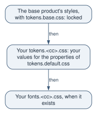

Niord documentation › Country kit guides
This guide ships in the country kit package as docs/designers-brief.md. It is rendered here from the kit as it
stands in the source this site was built from; a country reads the copy of the version it builds on in
.niord/kit/. A guide this page names only by its file in the kit package is not on this site: it is
read in the kit package only.
For the designer of a country’s theme. It says what a theme may change, the rules it must keep, and
how to hand the work to a design tool. Read
the kit package’s docs/responsibilities-and-upgrades.md first for who owns what.
What a theme changes, and where
A theme is a few files in the country repository’s fe/:
-
fe/styles/tokens.<cc>.css: the brand tokens, values only.initwrites it as a copy of the default, and you change its values. -
fe/styles/fonts.<cc>.csswith the face files infe/styles/fonts/<face>/: the text face, when the country has its own. -
The branding images in
fe/admin/assets/branding/andfe/info/assets/branding/.
The build loads the base product’s styles, its locked tokens among them, then your
tokens.<cc>.css, then your fonts.<cc>.css (The seams in the kit package’s README.md).

Your inputs are the base product’s two token files. After set-up you read them at
fe/.niord/base/styles/tokens.default.css and fe/.niord/base/styles/tokens.base.css.
The token contract
-
Values only. Your
tokens.<cc>.cssholds the custom properties oftokens.default.css, with your values, and nothing else. Add no new token. -
No base token redeclared.
tokens.base.cssholds the tokens every deployment shares: the mono font (--niord-font-mono), the message pin and its labels, the message map’s halos and count badge, the geometry editor’s buffer overlay (--niord-msg-buffer-filland--niord-msg-buffer-stroke) and its fill, the measure tool, the chart-extent outlines, the severity notices, the attention rail and the diff colours. Your file loads after it, so a redeclared base token would win. No build check stops that: review does. Never redeclare one. The area and chart overlays (--niord-area-,--niord-chart-) are intokens.default.css, so they are yours to retune. -
The accent is not the action colour. The default makes
--niord-action-primary-bgan alias of the primary colour, and keeps the accent for state and wayfinding: the selection wash, the header’s brand bar, badges. To make buttons use the accent, point the alias at a step of the accent dark enough for the white label’s floor (Contrast floors). Never restyle the button classes. -
The destructive red is semantic, not brand. Keep
--niord-action-danger-bg: #b52d20and its hover#9a2418as they are. Change them only for a deliberate reason. -
The 18 status tokens are independent. Six statuses (published, draft, verified, cancelled, expired, deleted) each have
-bg,-fgand-bd. Keep all 18 as literal values, never avar()of another token, so a country can tell any two statuses apart. Equal values are allowed: the default gives draft and verified the same values, cancelled and expired the same values, and most-bdthe value of their-fg. -
Radius is a real axis. The default uses 5, 8 and 12 px (
--niord-radius-sm,--niord-radius,--niord-radius-lg). Smaller radii give a flatter, more official tone to the whole UI. -
--niord-font-size-adjustkeeps a non-system face at the right size. The default isnone. The UI is sized for the system faces, whose x-height is about 0.50 to 0.55 of the font size. A face whose x-height lies outside that band sets the token to a number, the x-height ratio it should render at (such as0.52), so no component needs its own font size. A face inside the band keepsnone. A face’s x-height ratio is itssxHeightdivided by itsunitsPerEm, both in the font file’s OS/2 and head tables, or its specimen gives it. -
The title colour carries hierarchy on hue.
--niord-fg-titlepoints at the brand primary, because body text is near-black. Keep it avar()of a step of your primary scale.
Contrast floors
The floors are part of the contract. They are WCAG AA: 4.5:1 for text, 3:1 for a border or a bar. Measure each one in your palette, and write the ratios as a comment on the value’s own line, in this form:
--niord-status-draft-fg: #1a5a97; /* 6.18:1 on -bg; wash 6.31:1 over bg, 6.50:1 over surface */| Token | Floor | The default’s measurement |
|---|---|---|
|
4.5:1 on |
|
each |
4.5:1 on its own |
the lowest, published |
|
3:1 on |
4.39:1 on |
|
4.5:1 on |
white: 11.17:1 and 13.15:1 on the primary |
|
4.5:1 on |
white: 11.17:1 |
|
4.5:1 on |
white: 6.25:1 on |
|
4.5:1 on |
|
|
4.5:1 on |
16.70:1 and 6.53:1 |
|
3:1 on |
the accent, 4.10:1 |
The status badge’s wash is its -bg at 65 % opacity, mixed in sRGB over what lies behind it:
color-mix(in srgb, <-bg>, transparent 35%) over --niord-bg or over --niord-surface. Composite
the colours that way before you measure.
Subtle text also sits on --niord-bg and on --niord-surface-sunken in places, where the default
measures 4.34:1 and 4.45:1, below 4.5:1. Meet 4.5:1 there too if your palette allows: the default’s
shortfall is a known gap, not a model.
White on the default’s teal accent measures 4.07:1. So pointing the button alias at an accent of
that lightness fails the floor of --niord-action-primary-fg: point it at a darker step of the
accent, or keep the primary.
One more rule has no ratio. Your accent draws the selection rail (--niord-accent) and the
selection wash (--niord-accent-soft). Keep both clearly distinct from the attention rail, a red
locked in tokens.base.css (#b52d20, 6.25:1 on white against a 3:1 floor). Measure the distance as
CIE76 ΔE, the distance in CIELAB that tokens.base.css uses: the default’s teal accent is about 97
from the rail, and a warm orange accent about 39, which that file still calls far. Keep both at
least 39 from the rail.
Fonts
-
Self-host the face. Put its
woff2files infe/styles/fonts/<face>/, with its licence file beside them. -
Declare it in
fe/styles/fonts.<cc>.css: an@font-facerule with a relativeurl()andfont-display: swap. The build hashes each file into its own output, so no other country’s build carries it. -
Each application’s
stylesbudget is raised by the size offonts.<cc>.csswhen it exists (The seams in the kit package’sREADME.md). Your face files do not count against the base product’s budget, but a large face still slows the first visit, so keep to the weights you use. -
Never link Google Fonts, or any
https:address, for a face or a stylesheet. The build fails it (The checks on every country build in the kit package’sREADME.md). The country’s own addresses, such as its authority’s site or its accessibility statement, go infe/build-urls-allowed.json, each scoped withappto the application that links it. A font or a stylesheet is never one of them: that list does not admit it. -
In
tokens.<cc>.css, set--niord-font-familyto the face first, then a fallback stack, and set--niord-font-size-adjustif the face needs it. A country with no face of its own keeps the default’s system stack andnone. -
The administration app’s service worker caches the face for offline use, in its
mediagroup.
The example country is the model: its fonts.xx.css and its
Lato face with the licence, OFL.txt.
Logos and icons
The branding check reads each image’s pixel size from its PNG header:
| Application | File | Size |
|---|---|---|
the public site |
|
32×32 |
the public site |
|
152×152 |
the public site |
|
44 px high, any width |
the administration app |
|
free |
The Niord mark and the administration app’s favicon belong to the base product and are not
brandable. What each file is for, and the rest of the branding contract, is in
Branding in the kit package’s README.md and
branding.schema.json.
A brief for a design tool
Attach tokens.default.css and tokens.base.css from fe/.niord/base/styles/. Fill in the first
three lines of the text below, with your country’s code in place of <cc>, then paste it:
Country: <the country's name>, code <cc>.
Brand direction: <the brand's colours, or a reference to them, and the tone>.
Text face: <the face, or "none": keep the system stack>.
Design a brand theme for this country's deployment of Niord, a maritime safety information
system with an administration app and a public site for mariners.
Attached are two files. tokens.default.css is the full set of brand tokens, with the default
values and their contrast measurements in comments. tokens.base.css holds the tokens every
deployment shares; read it for context only.
Return ONE file, tokens.<cc>.css, and nothing else:
- Exactly the custom properties of tokens.default.css, under one :root rule, with your values.
Add none, leave none out, rename none.
- No property from tokens.base.css.
- Values only: no @import, no url(), no @font-face, no font loading of any kind.
- Keep --niord-action-primary-bg and --niord-action-primary-bg-hover aliases: var() of a primary
or an accent token.
- Keep --niord-fg-title a var() of a step of the primary scale.
- Keep --niord-action-danger-bg #b52d20 and --niord-action-danger-bg-hover #9a2418 as they are:
the red is semantic.
- Keep the 18 status tokens (published, draft, verified, cancelled, expired, deleted; each -bg,
-fg and -bd) as 18 literal values, never a var() of another token. Equal values are allowed.
- Meet these floors (WCAG AA), measured with the WCAG 2 contrast ratio:
--niord-fg-subtle 4.5:1 on --niord-surface, and on --niord-bg and --niord-surface-sunken too
if your palette allows: the default measures 4.34:1 and 4.45:1 there, below 4.5:1, a known gap
the base product's backlog records ("The default --niord-fg-subtle is below AA off
--niord-surface"), not a model;
each --niord-status-*-fg 4.5:1 on its own -bg, and on the badge's wash of that -bg over
--niord-bg and over --niord-surface, the wash being the -bg at 65 % opacity mixed in sRGB,
color-mix(in srgb, <-bg>, transparent 35%);
--niord-surface-500 3:1 on --niord-bg and on --niord-surface;
--niord-action-primary-fg 4.5:1 on --niord-action-primary-bg and on its hover;
--niord-fg-on-primary 4.5:1 on --niord-primary;
--niord-action-danger-fg 4.5:1 on --niord-action-danger-bg and on its hover;
--niord-fg-title 4.5:1 on --niord-surface;
--niord-header-fg and --niord-header-muted 4.5:1 on --niord-header-bg;
--niord-header-active 3:1 on --niord-header-bg.
- Write each measured ratio as a comment on its value's line, as in
--niord-status-draft-fg: #1a5a97; /* 6.18:1 on -bg; wash 6.31:1 over bg, 6.50:1 over surface */
- Keep --niord-accent and --niord-accent-soft at least 39 from --niord-attention-rail
(#b52d20 in tokens.base.css), measured as CIE76 delta E in CIELAB.
- Give --niord-font-family as a family stack only: the face first and the default's system
stack after it, or the default's stack unchanged when the text face is "none". The face files
are added separately. Set --niord-font-size-adjust to the face's wanted x-height ratio as a
number (such as 0.52) when its x-height lies outside about 0.50 to 0.55 of the font size,
otherwise none.Its output drops into fe/styles/ unchanged, as tokens.<cc>.css. Measure its ratios yourself
before you commit it: a design tool can write a ratio it did not measure.
How to see it worked
From the country repository’s fe/:
-
Compare your
styles/tokens.<cc>.csswith.niord/base/styles/tokens.default.css: the same custom properties, none oftokens.base.css, and each ratio comment the ratio you measure. -
Run
node setup.mjs. -
Run
npm run build. It finishes green. -
Look at both applications:
npm run start:adminserves the administration app on port 4200, andnpm run start:infothe public site on port 4400. To see them with a backend and data, run./start-local.shfrom the repository root instead (Running it locally in the kit package’sREADME.md).